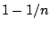
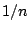
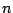
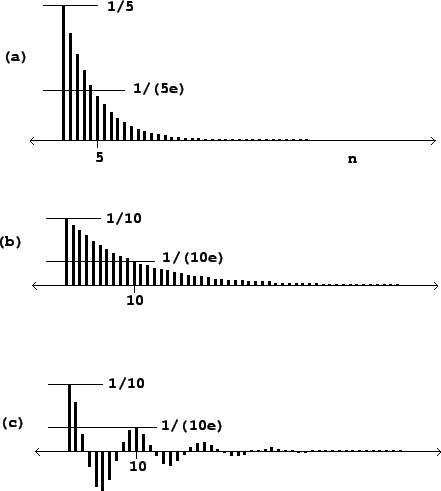
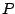
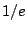
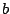
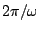

In Section 7.4 we analyzed the impulse response of a recirculating comb filter, of which the one-pole low-pass filter is a special case. Figure 8.22 shows the result for two low-pass filters and one complex one-pole resonant filter. All are elementary recirculating filters as introduced in Section 8.2.3. Each is normalized to have unit maximum gain.
In the case of a low-pass filter, the impulse response gets longer (and
lower) as the pole gets closer to one. Suppose the pole is at a point 
(so that the cutoff frequency is  radians). The normalizing factor is
also . After  points, the output diminishes by a factor of
|  |
The situation gets more interesting when we look at a resonant one-pole filter, that is, one whose pole lies off the real axis. In part (c) of the figure, the pole  has absolute value 0.9 (as in part b), but its argument is set to radians. We get the same settling time as in part (b), but the output rings at the resonant frequency (and so at a period of 10 samples in this example).
A natural question to ask is, how many periods of ringing do we get before the
filter decays to strength ? If the pole of a resonant filter has magnitude
as above, we have seen in Section 8.2.3 that the
bandwidth (call it ) is about , and we see here that the settling time
is about . The resonant frequency (call it ) is the argument of the
pole, and the period in samples of the ringing is
. The number of periods that make up the settling time is thus: